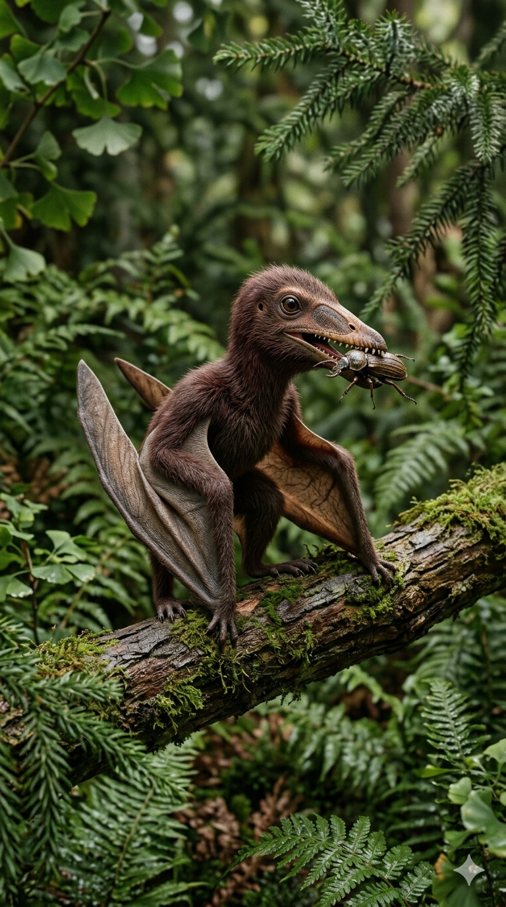
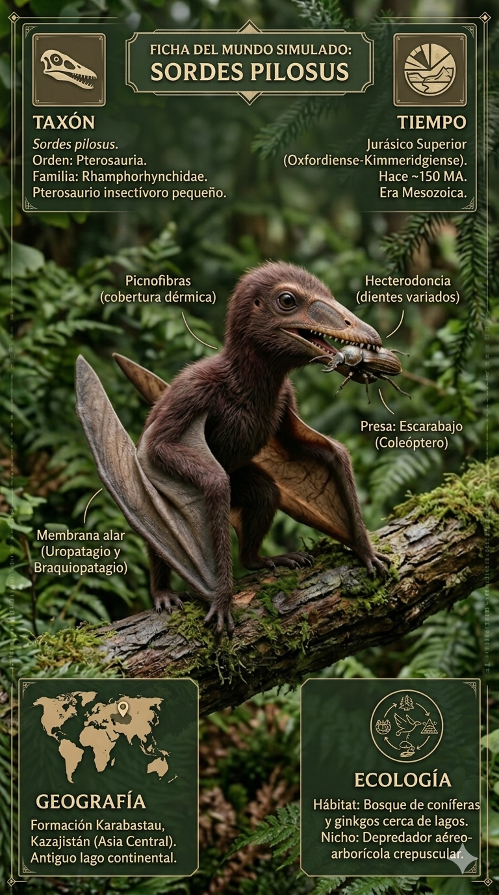
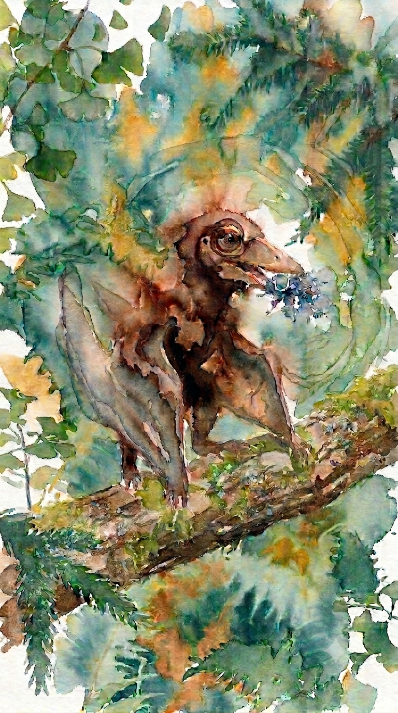
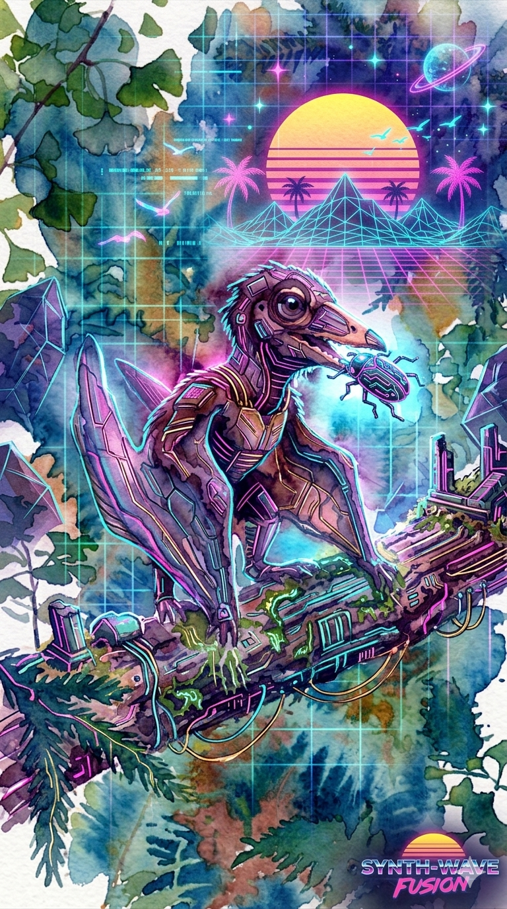

Paleoficha de Sordes




Periodo: Jurásico Superior
Edad: Hace aproximadamente 150 millones de años.
Dieta: Piscívoro y carnívoro de pequeña presa.
Distribución: Formación Karabastau, Kazajistán.
TAXÓN:
Sordes pilosus
CLADO: Rhamphorhynchidae (Pterosauria)
DIETA: Piscívoro y carnívoro de pequeña presa
TAMAÑO: Envergadura alar de aproximadamente 60 cm
LOCOMOCIÓN: Vuelo activo y cuadrúpedo terrestre; presencia de una membrana (patagio) y revestimiento de picnofibras.
TIEMPO:
Jurásico Superior (Kimmeridgiense/Titoniense), aproximadamente 150 millones de años.
GEOGRAFÍA:
Formación Karabastau, Kazajistán. Cuencas lacustres continentales con sistemas de lagos de agua dulce rodeados por bosques de coníferas.
ECOLOGÍA:
Bosques de coníferas, ginkgos y cícadas en las orillas. Compartía el ecosistema con peces óseos, insectos y pequeños vertebrados. Ocupaba el nicho de depredador aéreo de pequeño tamaño, capturando peces y otras presas en los márgenes de los lagos. Competía con otros animales voladores insectívoros y podía ser presa de depredadores de mayor tamaño.
CLIMA:
Wm6 (Estacional templado). Condiciones templadas con una marcada estacionalidad.
ESTADO ECOLÓGICO:
Estable. Es un fósil fundamental para demostrar la presencia de picnofibras, estructuras relacionadas con la termorregulación de los pterosaurios.
Vídeo PalEntropía:
▶ Ver Short en YouTube